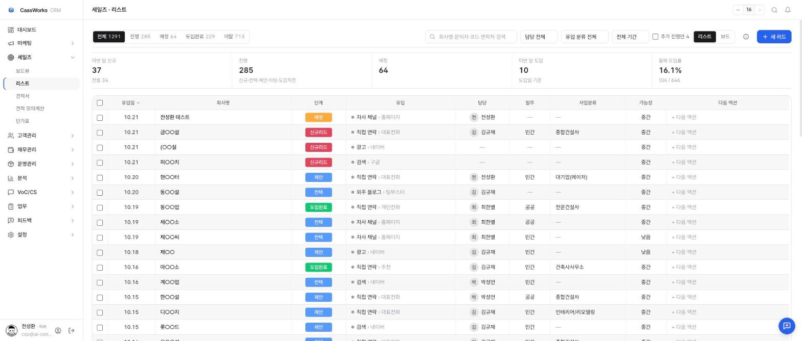
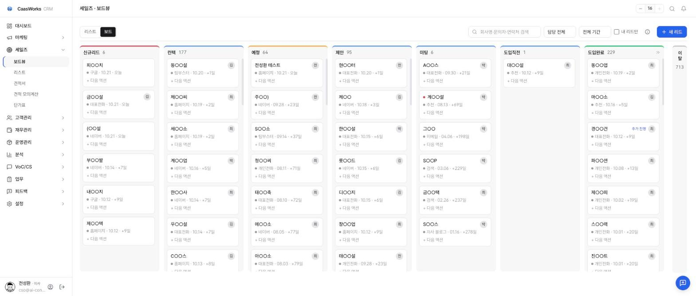
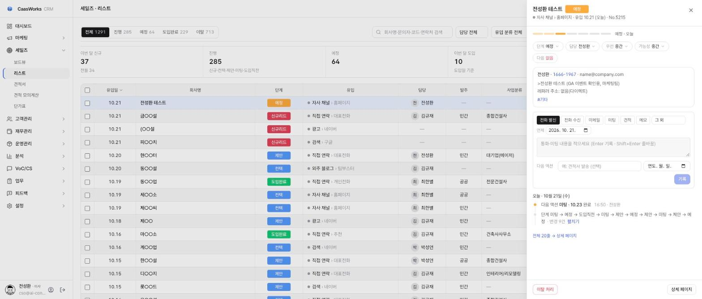
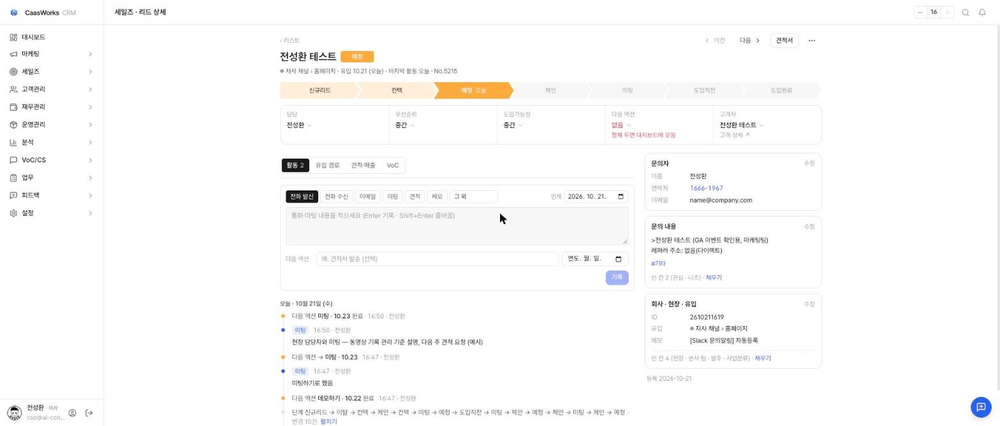
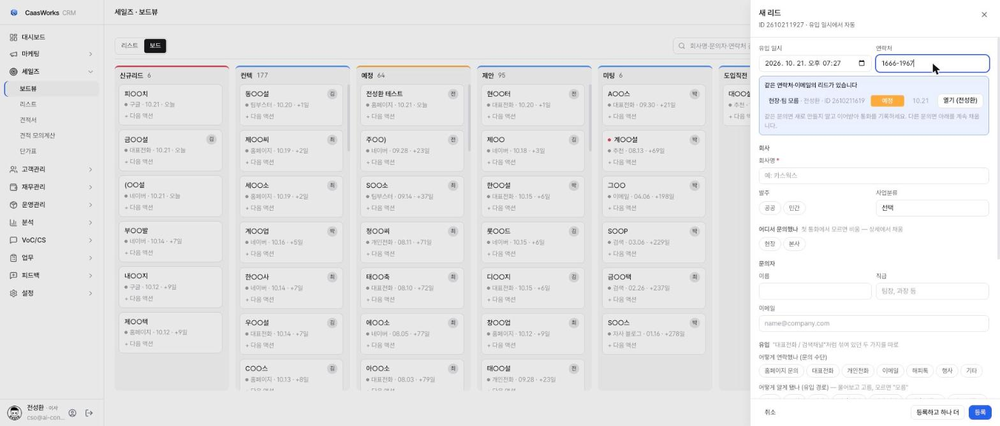
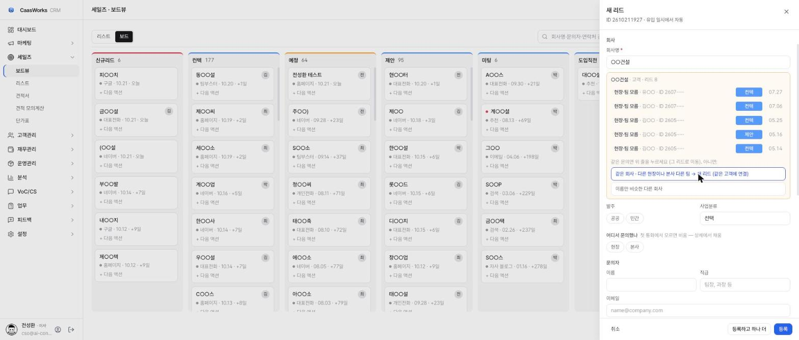
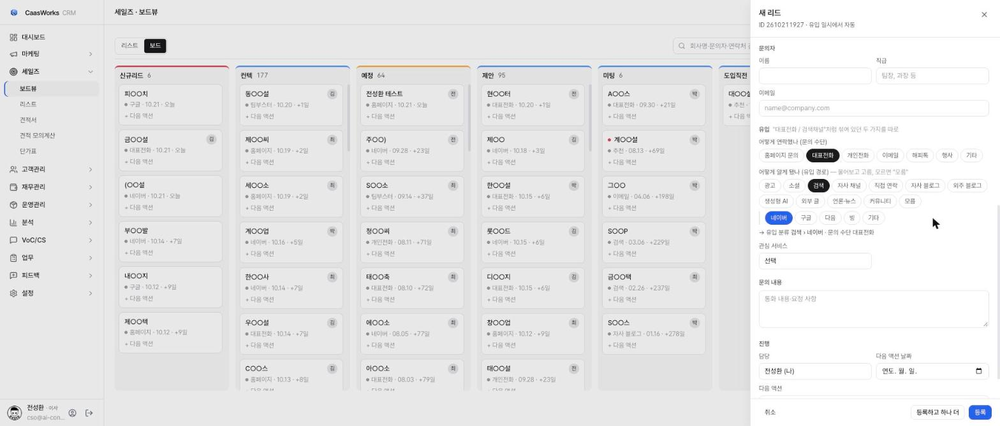

<title>카스웍스 CRM 리뉴얼 안내</title>
<meta name="claude:viewport-fit-sides" content="cover">
<link rel="preconnect" href="https://fonts.googleapis.com">
<link rel="preconnect" href="https://fonts.gstatic.com" crossorigin>
<link rel="stylesheet" href="https://fonts.googleapis.com/css2?family=IBM+Plex+Sans+KR:wght@400;500;600&family=IBM+Plex+Mono:wght@500&display=swap">
<style>
/* 레이아웃: 읽는 글은 760, 화면 캡처는 그보다 넓게(최대 1040) — 세일즈 화면별 "그림 → 이렇게 쓰세요" */
:root {
  --bg: #fbfbfc; --surface: #ffffff; --fg: #1a1a1f; --fg2: #555a64; --fg3: #8b909a; --line: #e4e5ea;
  --accent: #2563eb; --accent-soft: #eaf1fe; --warn-soft: #fff4e5; --due: #b4233a;
  --chip-new: #e2445c; --chip-prog: #579bfc; --chip-plan: #fdab3d; --chip-won: #00c875; --chip-out: #c4c4c4;
  --f-body: "IBM Plex Sans KR", "Apple SD Gothic Neo", "Malgun Gothic", sans-serif;
  --f-mono: "IBM Plex Mono", ui-monospace, Menlo, monospace;
}
@media (prefers-color-scheme: dark) { :root:not([data-theme="light"]) {
  --bg: #121316; --surface: #1a1c20; --fg: #eceef2; --fg2: #a7acb6; --fg3: #7a7f89; --line: #2b2e34;
  --accent: #7aa7ff; --accent-soft: #1c2a45; --warn-soft: #33270f; --due: #ff7b8e; color-scheme: dark } }
:root[data-theme="dark"] {
  --bg: #121316; --surface: #1a1c20; --fg: #eceef2; --fg2: #a7acb6; --fg3: #7a7f89; --line: #2b2e34;
  --accent: #7aa7ff; --accent-soft: #1c2a45; --warn-soft: #33270f; --due: #ff7b8e; color-scheme: dark }
* { box-sizing: border-box }
body { background: var(--bg); color: var(--fg); font-family: var(--f-body); font-size: 15px; line-height: 1.7;
  padding-left: max(16px, env(safe-area-inset-left, 0px)); padding-right: max(16px, env(safe-area-inset-right, 0px)); padding-block: 40px 64px }
main { max-width: 1040px; margin: 0 auto }
.txt { max-width: 760px }
h1 { font-size: 28px; font-weight: 600; line-height: 1.3; margin: 0 0 6px; text-wrap: balance; letter-spacing: -0.01em }
.meta { color: var(--fg3); font-size: 13px; margin: 0 0 20px }
.lead { font-size: 16px; color: var(--fg2); margin: 0 0 12px }
nav.toc { display: flex; flex-wrap: wrap; gap: 6px; margin: 18px 0 8px }
nav.toc a { font-size: 13px; color: var(--fg2); text-decoration: none; border: 1px solid var(--line); border-radius: 999px; padding: 3px 12px; background: var(--surface) }
nav.toc a:hover, nav.toc a:focus-visible { color: var(--accent); border-color: var(--accent); outline: none }
section { padding-top: 34px; margin-top: 26px; border-top: 1px solid var(--line) }
h2 { font-size: 20px; font-weight: 600; margin: 0 0 12px; text-wrap: balance }
h3 { font-size: 15px; font-weight: 600; margin: 20px 0 6px }
p { margin: 0 0 10px; max-width: 65ch }
ul, ol { margin: 0 0 10px; padding-left: 20px } li { margin: 3px 0 } li::marker { color: var(--fg3) }
b { font-weight: 600 }
figure { margin: 12px 0 18px }
figure img { display: block; width: 100%; max-width: 100%; height: auto; border: 1px solid var(--line); border-radius: 8px; background: var(--surface) }
figcaption { font-size: 13px; color: var(--fg3); margin-top: 6px }
.k { font-family: var(--f-mono); font-size: 13px; background: var(--accent-soft); color: var(--accent); border-radius: 4px; padding: 1px 6px; white-space: nowrap }
.btn { display: inline-block; font-size: 13px; font-weight: 500; border: 1px solid var(--line); border-radius: 6px; padding: 0 8px; background: var(--surface); white-space: nowrap }
.btn.p { background: var(--accent); border-color: var(--accent); color: #fff }
.tip { background: var(--accent-soft); border-radius: 8px; padding: 10px 14px; margin: 12px 0; font-size: 14px; max-width: 760px }
.tip.w { background: var(--warn-soft) }
.tip b:first-child { display: block; margin-bottom: 2px }
.chips { display: flex; flex-wrap: wrap; gap: 8px 14px; margin: 8px 0 12px; font-size: 13px; color: var(--fg2) }
.chips span { display: inline-flex; align-items: center; gap: 6px }
.chip { display: inline-grid; place-items: center; min-width: 58px; height: 22px; padding: 0 8px; border-radius: 4px; color: #fff; font-size: 12px; font-weight: 500; font-style: normal }
.tbl { overflow-x: auto; margin: 10px 0 14px; max-width: 760px }
table { border-collapse: collapse; width: 100%; font-size: 14px; min-width: 480px }
th, td { text-align: left; padding: 7px 10px; border-bottom: 1px solid var(--line); vertical-align: top }
th { font-size: 12px; font-weight: 500; color: var(--fg3) }
td:first-child { white-space: nowrap; font-weight: 500 }
.steps { counter-reset: s; list-style: none; padding: 0; max-width: 760px }
.steps li { counter-increment: s; position: relative; padding-left: 32px; margin: 8px 0 }
.steps li::before { content: counter(s); position: absolute; left: 0; top: 2px; width: 22px; height: 22px; border-radius: 50%; background: var(--fg); color: var(--bg); font-size: 12px; font-weight: 600; display: grid; place-items: center }
footer { margin-top: 40px; padding-top: 18px; border-top: 1px solid var(--line); font-size: 13px; color: var(--fg3) }
@media (max-width: 480px) { h1 { font-size: 24px } body { font-size: 14.5px } }
</style>

<main>
  <div class="txt">
    <h1>카스웍스 CRM 리뉴얼 안내</h1>
    <p class="meta">2026-10-21 · 세일즈</p>
    <p class="lead">세일즈 화면을 새로 정리했습니다. 메뉴는 그대로이고, 리드를 여는 방식과 기록하는 방식이 바뀌었습니다. 더 빨라졌고, 같은 일을 두 번 적지 않아도 됩니다.</p>
    <nav class="toc" aria-label="목차">
      <a href="#list">리스트</a><a href="#board">보드</a><a href="#drawer">리드 드로어</a><a href="#detail">리드 상세</a><a href="#record">기록 남기기</a><a href="#newlead">새 리드 등록</a><a href="#common">읽는 법</a><a href="#feedback">피드백</a>
    </nav>
  </div>

  <section id="list">
    <h2>리스트</h2>
    <figure><figcaption>세일즈 › 리스트 (고객사 이름은 가렸습니다)</figcaption></figure>
    <ul class="txt">
      <li>위 탭으로 <b>전체 · 진행 · 예정 · 도입완료 · 이탈</b>을 나눠 봅니다. 탭 옆 숫자가 건수입니다.</li>
      <li>50건씩 보여 줍니다. 표 아래 <span class="btn">‹ ›</span>로 넘기고, 검색·담당·유입 분류·연도로 거릅니다.</li>
      <li>회사명 앞 빨간 점은 우선순위 높음·긴급입니다.</li>
      <li>왼쪽 칸에 체크하면 화면 아래에 <b>선택 바</b>가 떠서 단계·담당을 한꺼번에 바꿉니다.</li>
      <li>행을 누르면 오른쪽에 <b>리드 드로어</b>가 열립니다.</li>
    </ul>
  </section>

  <section id="board">
    <h2>보드</h2>
    <figure><figcaption>세일즈 › 보드뷰 — 열 = 단계, 카드 = 리드</figcaption></figure>
    <ul class="txt">
      <li>카드를 끌어서 다른 열에 놓으면 단계가 바뀝니다. 이탈은 오른쪽 끝에 접혀 있고, 누르면 펼쳐집니다.</li>
      <li>카드 둘째 줄의 <span class="k">+12일</span>은 문의가 들어온 뒤 지난 날입니다.</li>
      <li>카드를 누르면 리스트와 같은 드로어가 열립니다. <b>Shift + 클릭</b>으로 여러 장을 골라 한꺼번에 바꿉니다.</li>
    </ul>
  </section>

  <section id="drawer">
    <h2>리드 드로어 — 목록을 떠나지 않고</h2>
    <figure><figcaption>리스트에서 리드를 누른 모습 (테스트 리드)</figcaption></figure>
    <ul class="txt">
      <li>맨 위 얇은 막대는 단계 진행입니다. 눌러서 단계를 바꿀 수 있습니다.</li>
      <li><b>단계 · 담당 · 우선 · 가능성</b> 칩을 누르면 그 자리에서 바뀝니다.</li>
      <li>가운데 <b>기록 칸</b>에 통화·미팅을 적습니다(아래 "기록 남기기").</li>
      <li>아래는 최근 타임라인 10줄입니다. 전체는 <span class="btn">상세 페이지</span>.</li>
    </ul>
  </section>

  <section id="detail">
    <h2>리드 상세</h2>
    <figure><figcaption>리드 상세 — 위에서부터 이름 · 단계 줄 · 속성 줄 · 기록과 타임라인 · 정보 카드</figcaption></figure>
    <ul class="txt">
      <li><b>단계 줄</b>을 누르면 그 단계로 바뀝니다. 지금 단계에는 머문 날(<span class="k">+2일</span>)이 보입니다.</li>
      <li><b>속성 줄</b>(담당 · 우선순위 · 도입가능성 · 다음 액션 · 고객사)은 누르면 바로 바꿉니다.</li>
      <li>오른쪽 카드(문의자 · 문의 내용 · 회사·현장·유입)는 <b>수정</b>을 눌러 고칩니다. 비어 있는 칸은 "빈 칸 · 채우기"로 모아 보입니다.</li>
      <li>위 <span class="btn">‹ 이전</span> <span class="btn">다음 ›</span>은 리스트에서 보던 순서대로 넘깁니다.</li>
    </ul>
  </section>

  <section id="record">
    <h2>기록 남기기 — 한 곳에서 한 번만</h2>
    <ol class="steps">
      <li>드로어나 상세의 기록 칸에서 유형을 고릅니다. <span class="btn">전화 발신</span> <span class="btn">전화 수신</span> <span class="btn">이메일</span> <span class="btn">미팅</span> <span class="btn">견적</span> <span class="btn">메모</span></li>
      <li>내용을 적고 Enter. 줄바꿈은 Shift + Enter.</li>
      <li>필요하면 <b>다음 액션</b>과 날짜를 같이 정합니다. 날짜를 넣은 다음 액션은 대시보드 "이번 주 액션"에 모입니다.</li>
      <li>회의록을 나중에 올릴 때는 오른쪽 위 <b>언제</b>에서 실제 미팅한 날을 고릅니다. 타임라인에는 그날로 들어가고, 적은 날은 옆에 따로 남습니다.</li>
    </ol>
    <div class="tip"><b>드로어에 쓴 것과 상세에 쓴 것은 같은 곳에 남습니다.</b>단계·담당·다음 액션을 바꾼 것도 타임라인에 한 줄씩 남습니다. 기록 유형에 따라 단계가 앞으로 자동 이동합니다(예: 미팅 기록 → 미팅 단계). 뒤로는 움직이지 않습니다.</div>
  </section>

  <section id="newlead">
    <h2>새 리드 등록</h2>
    <p class="txt">전화·이메일·행사로 들어온 문의를 손으로 넣을 때입니다. 리스트나 보드의 <span class="btn p">+ 새 리드</span>를 누르면 오른쪽에 등록 칸이 열립니다.</p>

    <h3>1. 유입 일시와 연락처부터</h3>
    <figure><figcaption>같은 연락처의 리드가 있으면 바로 위에 보입니다</figcaption></figure>
    <ul class="txt">
      <li><b>유입 일시</b>(문의가 들어온 날짜·시각)를 맞추면 ID가 자동으로 만들어집니다. 예: 10월 21일 19:27 → <span class="k">2610211927</span></li>
      <li>연락처를 넣으면 같은 번호·이메일의 리드를 찾아 보여 줍니다. 담당이 없는 온라인 문의면 <span class="btn p">이어받기</span> — 새로 만들지 않고 그 리드의 담당이 나로 바뀝니다. 그 리드에 통화를 기록하세요.</li>
    </ul>

    <h3>2. 회사명 — 같은 회사 문의가 있으면</h3>
    <figure><figcaption>같은 회사의 기존 리드가 보이고, 셋 중 하나를 고릅니다 (회사·문의자 이름은 가렸습니다)</figcaption></figure>
    <ul class="txt">
      <li><b>같은 문의</b>면 목록의 그 줄을 누릅니다. 그 리드로 이동합니다.</li>
      <li>같은 회사의 <b>다른 현장이나 본사 다른 팀</b>이면 "새 리드"를 고릅니다. 같은 고객사에 연결됩니다.</li>
      <li>이름만 비슷한 <b>다른 회사</b>면 "다른 회사"를 고릅니다.</li>
    </ul>

    <h3>3. 어디서 문의했나 · 유입</h3>
    <figure><figcaption>문의 수단과 유입 경로를 따로 고릅니다</figcaption></figure>
    <ul class="txt">
      <li><b>어디서 문의했나</b>: 현장이면 현장명·지역, 본사면 팀. 첫 통화에서 모르면 비워 두고 나중에 상세에서 채웁니다.</li>
      <li><b>어떻게 연락했나</b>(대표전화 · 개인전화 · 홈페이지 문의 …)와 <b>어떻게 알게 됐나</b>(검색 › 네이버, 광고 › 구글 …)를 따로 고릅니다. 물어봐서 모르면 "모름".</li>
      <li><span class="btn p">등록</span>을 누르면 방금 만든 리드의 드로어가 열립니다. 바로 첫 통화를 기록하세요. 여러 건을 연달아 넣을 때는 <span class="btn">등록하고 하나 더</span>.</li>
    </ul>
    <div class="tip w"><b>홈페이지 문의로 같은 사람이 다시 문의하면</b>새 리드가 따로 생기지 않습니다. 진행 중인 리드(최근 30일)의 타임라인에 주황색 <b>온라인 재문의</b>로 붙고, 다음 액션이 비어 있으면 "온라인 재문의 확인 · 오늘"이 들어갑니다. 끝난 리드면 새 리드가 생기고 메모에 이전 문의 ID가 남습니다.</div>
  </section>

  <section id="common">
    <h2>읽는 법</h2>
    <p class="txt">단계 순서: 신규리드 → 컨텍 → 예정 → 제안 → 미팅 → 도입직전 → 도입완료 (그리고 이탈)</p>
    <div class="chips" aria-label="단계 색">
      <span><i class="chip" style="background:var(--chip-new)">신규리드</i>아직 손 안 댄 것</span>
      <span><i class="chip" style="background:var(--chip-prog)">진행</i>컨텍·제안·미팅·도입직전</span>
      <span><i class="chip" style="background:var(--chip-plan)">예정</i></span>
      <span><i class="chip" style="background:var(--chip-won)">도입완료</i></span>
      <span><i class="chip" style="background:var(--chip-out)">이탈</i></span>
    </div>
    <div class="tbl"><table>
      <thead><tr><th>보이는 것</th><th>뜻</th></tr></thead>
      <tbody>
        <tr><td><span class="k">+3일</span> · <span class="k">오늘</span></td><td>지난 날. 예: 유입 10.18 (+3일), 미팅 +2일</td></tr>
        <tr><td><span class="k">2일 남음</span> · <span style="color:var(--due);font-weight:600">1일 지남</span></td><td>다음 액션까지 남은 날 / 지난 날(빨강)</td></tr>
        <tr><td><span class="k">ⓘ</span></td><td>이 화면 숫자의 기준</td></tr>
        <tr><td>오른쪽 아래 둥근 버튼</td><td>피드백·요청 남기기</td></tr>
      </tbody>
    </table></div>
    <div class="tip"><b>처음 열 때 몇 초 걸릴 수 있습니다.</b>한동안 아무도 안 쓰면 서버가 쉬다가 깨어나느라 그렇습니다. 그다음부터는 0.1~0.4초 안에 뜨고, 한 번 본 화면은 바로 다시 뜹니다.</div>
  </section>

  <section id="feedback" class="txt">
    <h2>불편하거나 이상하면</h2>
    <p>화면 오른쪽 아래 <b>피드백 버튼</b>으로 남겨 주세요. 어느 화면에서 무엇을 했는지 한 줄이면 충분합니다. 엔조가 매일 확인해서 반영합니다.</p>
  </section>

  <footer>카스웍스 CRM · 2026-10-21 세일즈 리뉴얼 · 그림 속 고객사·문의자 이름은 가렸습니다</footer>
</main>
